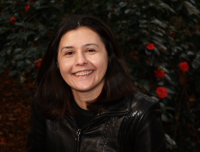
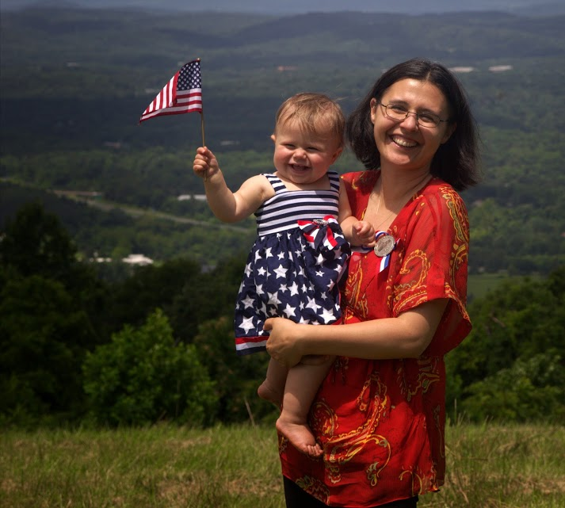

|  |
Ana Nora (Sovarel) EvansI am a PhD candidate at the University of Virginia, advised by Professor Mary Lou Soffa. I am interested in applying formal methods to improve the quality and safety of software. I have a MS in Mathematics (2014) and Master of Computer Science (2006), both from UVa. I am hosting the Charlottesville Math Circle with David Evans. If you have a three to five year old girl interested in puzzles and yummy treats please join us. Email: ans5k@virginia.edu |
Research Refereed Publications Software Fault Isolation For Robust Compilation Ana Nora Evans. In POPL 2018 Student Research Competition. Los Angeles, CA, January 11-12 2018. [Abstract] [Poster]. Abstraction-based Temporal Data Retrieval for a Clinical Data Repository Andrew Post, Ana Nora Sovarel, James Harrison In Proceedings of the American Medical Informatics Association Symposium. Chicago, IL, November 10-14 2007. Where's the FEEB?: The Effectiveness of Instruction Set Randomization [pdf] [html] [157 cites] Ana Nora Sovarel, David Evans, Nathanael Paul. 14th Usenix Security Symposium, Baltimore, MD, August 1–5, 2005 A Framework for Building Highly Available Services based on Message Communication through Channels Cezar Totth, Nora Sovarel, Bogdan Sumanariu. 14th International Conference on Control Systems and Computer Science, 2003, Bucharest, Romania Other Publications Formally Secure Compilation of Unsafe Low-Level Components [pdf] Guglielmo Fachini, Cătălin Hriţcu, Marco Stronati, Ana Nora Evans, Théo Laurent, Arthur Azevedo de Amorim, Benjamin C. Pierce, Andrew Tolmach. PriSC 2018 Principles of Secure Compilation at POPL 2018 Talks Context Free Grammars - Parsing [Google Slides]. Guest Lecture CS 4620. Charlottesville, VA, Sep 7, 2017 Using Verified Software Fault Isolation for a Formally Secure Compiler[ Google Slides]. Prosecco Reading Group. INRIA Paris, France, August 2nd, 2017 Paper presentation: Inferring Annotations For Device Drivers From Verification Histories. Notes: [pdf]. Software Engineering Research Group Talk, Charlottesville, VA, Feb 6, 2017 Introduction to Separation Logic[pdf]. Research Group Talk, Charlottesville, VA, Oct 6, 2016 Topologically Trivial Legendrian Knots [ppt] [pdf] MATH 8720 Symplectic and Contact Topology, Charlottesville, VA, April 28, 2011 Abtsract Weights [pdf] MATH 8710 Lie Algebras, University of Virginia, Charlottesville, VA, Nov 17, 2010 An Untangled Introduction to Knot Theory [pptx] Math Club Talk, University of Virginia, Charlottesville, VA, Feb 12, 2010 Identification and Protection of Security Critical Data [ppt] Masters Project Presentation, University of Virginia. Charlottesville, VA, June 6, 2006. The Effectiveness of Instruction Set Randomization [ppt] 14th Usenix Security Symposium, Baltimore, MD, August 1-5, 2005 The Effectiveness of Instruction Set Randomization [ppt] [pdf] IEEE Security and Privacy Symposium, Work in Progress, 9 May 2005 Projects 2017 - SECOMP (external collaborator, work with Catalin Hritcu and Marco Stronati). 2006 - Automatic Identification and Protection of Security-Critical Data 2005 - Feeb Internships and Summer Schools Visiting Researcher, INRIA Paris, May 8th 2017 - August 4th 2017 Program for Women and Mathematics at the Institute for Advanced Study - Surfaces, orbifolds and knots, IAS, May 2008.  Teaching Instructor - MATH 1140 Financial Mathematics; Fall 2011 Teaching Assistant - MATH 7752 Algebra II, University of Virginia; Spring 2011 Grader - MATH 5651 Advanced Linear Algebra, University of Virginia; Fall 2010 Teaching Assistant - CS101 Intro to Computer Science, University of Virginia; Fall 04, Spring 05 Teaching Assistant - Algorithm Analysis, Politehnica University of Bucharest; Fall 03 Teaching Assistant - Distributed Programming, Politehnica University of Bucharest; Fall 02 Teaching Assistant - Operating Systems Design, Politehnica University of Bucharest; Spring 02 Teaching Assistant - Object Oriented Programming, Politehnica University of Bucharest; Spring 02, 03, 04 Other Activities Volunteer family mentor with International Rescue Committee Volunteer tutor at Johnson Elementary School; Jan 2010 - May 2010 Volunteer tutor at Charlottesville High School; Sept 2007 - June 2008 Founder and Organizer of Security Reading Group at UVa; Jan 2006 - May 2006 Mentoring Committee Chair of ACM-W chapter at the University of Virginia ; Sep 2006 - May 2006 Personal I am Romanian. Before moving to Virginia, I lived in Bucharest, Romania. In Summer 2010 I went to World Cup 2010 in South Africa.(Pictures) My daughter, Dorina Michelle Evans, was born on June 29, 2012. On July 4th 2013, I became a US citizen. (Pictures) My son, Maxwell Nicholas Evans, was born on March 18, 2015. My husband, David Evans wrote two books: Introduction to Computing: Explorations in Language, Logic, and Machines and Dori-Mic and the Universal Machine!. |
|